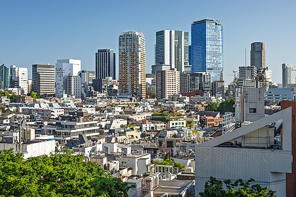
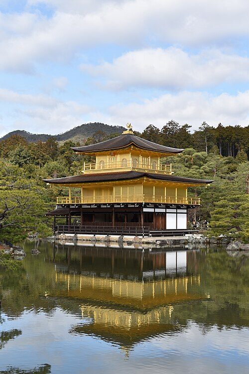

日本
PLANNING OPTIMIZADO
17 — 29 OCTUBRE 2026
17 — 29 OCTUBRE 2026
FAMILIA PANO HERNANDEZ · 3 VIAJEROS · 13 DÍAS
JAPÓN
2026
2026
Tokio · Kioto · Osaka. Trece días con las rutas ordenadas por zona geográfica, los templos a primera hora y todo lo importante ya reservado.
Maria Amparo Hernandez Peraire
Carlos Pano Garcia
Carlos Pano Hernandez
Carlos Pano Garcia
Carlos Pano Hernandez
Ver el índice
{{ statusLabel }}
CONTENIDO
El viaje, página por página
Una página por día. Las cuatro primeras son para leer antes de salir; el resto se consulta en la calle.
ANTES DE SALIR
Reservas y confirmaciones03
Presupuesto por día04
Equipaje05
Frases, contactos y emergencias06
TOKIO · 4 NOCHES
La ciudad: zonas, imperdibles, mesas07
Día 1 · Llegada a Haneda08
Día 2 · Asakusa, Ueno, Skytree09
Día 3 · Meiji, Harajuku, Shinjuku10
Día 4 · TeamLab, Tsukiji, Shibuya Sky11
Día 5 · Nozomi a Kioto12
KIOTO · 3 NOCHES
La ciudad: zonas, imperdibles, mesas13
Día 5 · Nishiki y Gion de noche14
Día 6 · Fushimi Inari al alba15
Día 7 · Arashiyama y Kinkaku-ji16
Día 8 · Tren a Osaka17
OSAKA · 5 NOCHES
La ciudad: zonas, imperdibles, mesas18
Día 8 · Primera noche en Dotonbori19
Día 9 · Castillo y Shinsekai20
Día 10 · Umeda y compras21
Día 11 · Universal Studios Japan22
Día 12 · Nara23
Día 13 · Kansai y vuelta a casa24
Notas25
JAPÓN 2026 · FAMILIA PANO HERNANDEZ02
ANTES DE SALIR · 01
Reservas y confirmaciones
Todo pagado salvo una cosa:
Shibuya Sky — reservar alrededor del 6 de octubre, slot 16:30 del 20 Oct, en shibuya-scramble-square.com
Vuelos · Air CanadaCONFIRMADO
MEX → YYZ → HND · AC0992 + AC0001
Código DBETWR | B9FITB · 3 pax
Regreso desde KIX el 29 Oct
Código DBETWR | B9FITB · 3 pax
Regreso desde KIX el 29 Oct
Shibuya Tobu HotelCONFIRMADO
3-1 Udagawa-cho, Shibuya · Twin with Sofa
Agoda #958975254 · No fumar
17 Oct 14:00 → 21 Oct 11:00
Agoda #958975254 · No fumar
17 Oct 14:00 → 21 Oct 11:00
Nozomi Green CarCONFIRMADO
Tokyo → Kyoto · 21 Oct 09:30
Order #96703 · ¥23,750 × 3 = ¥71,250
Asientos lado D: Monte Fuji
Order #96703 · ¥23,750 × 3 = ¥71,250
Asientos lado D: Monte Fuji
Hotel Vischio Kyoto by GRANVIACONFIRMADO
Literalmente dentro de Kyoto Station
21 Oct 15:00 → 24 Oct 11:00
21 Oct 15:00 → 24 Oct 11:00
Plum Hotel — Osaka NambaCONFIRMADO
Dotonbori a pie · USJ a 20 min
Acceso directo a Nara vía Kintetsu
24 Oct 16:00 → 29 Oct 10:00
Acceso directo a Nara vía Kintetsu
24 Oct 16:00 → 29 Oct 10:00
Tokyo SkytreeCONFIRMADO
18 Oct 19:00 · Combo 350 m + 450 m
3 adultos
3 adultos
TeamLab PlanetsCONFIRMADO
20 Oct 08:00 · Toyosu
3 adultos · ¥5,600 por persona
3 adultos · ¥5,600 por persona
Universal Studios JapanCONFIRMADO
27 Oct · 3 tickets + ExpressPass
Timed entry de Nintendo World: en la app, al entrar
Timed entry de Nintendo World: en la app, al entrar
Shibuya SkyPENDIENTE — RESERVAR ~6 OCT
20 Oct · slot 16:30 · shibuya-scramble-square.com · Los slots de atardecer se agotan en cuanto abren, con 4 semanas de anticipación.
DOS AVISOS DE LOGÍSTICA
Noche del 20: avisar en recepción del Shibuya Tobu. El shinkansen sale 09:30 el día 21 y hay que salir del hotel a las 08:30.
21 Oct, 11:45: se llega a Kioto antes del check-in de las 15:00. Consigna en la estación, ¥400–700 por maleta.
APPS IMPRESCINDIBLES
Google Maps — indica andén exacto · Google Translate — cámara en menús · USJ App — timed entry Nintendo World · Hyperdia — rutas de metro en tiempo real · PayPay — pagos QR en tiendas
RESERVAS Y CONFIRMACIONES03
ANTES DE SALIR · 02
Presupuesto por día
Estimado por persona, en yenes. No incluye compras ni lo ya pagado (vuelos, hoteles, shinkansen, Skytree, TeamLab, Universal).
| DÍA | RUTA | TRANSPORTE | ENTRADAS | COMIDA | DÍA |
|---|---|---|---|---|---|
| 17 Oct | Llegada · Shibuya | 460 | — | 2,500 | 2,960 |
| 18 Oct | Asakusa · Ueno · Skytree | 580 | pagado | 3,500 | 4,080 |
| 19 Oct | Meiji · Harajuku · Shinjuku | 400 | — | 3,500 | 3,900 |
| 20 Oct | TeamLab · Tsukiji · Shibuya Sky | 600 | 2,500 | 4,000 | 7,100 |
| 21 Oct | Nozomi a Kioto · Nishiki · Gion | 600 | — | 3,500 | 4,100 |
| 22 Oct | Fushimi Inari · Kiyomizudera | 600 | 500 | 3,500 | 4,600 |
| 23 Oct | Arashiyama · Kinkaku-ji · Ryoan-ji | 700 | 1,600 | 3,500 | 5,800 |
| 24 Oct | Tren a Osaka · Dotonbori | 820 | — | 3,500 | 4,320 |
| 25 Oct | Castillo · Shinsekai · Kuromon | 500 | 1,400 | 3,500 | 5,400 |
| 26 Oct | Umeda · compras · Sky Building | 400 | 2,600 | 3,500 | 6,500 |
| 27 Oct | Universal Studios Japan | 760 | 3,500 | 5,000 | 9,260 |
| 28 Oct | Nara · última noche | 1,360 | 1,200 | 4,000 | 6,560 |
| 29 Oct | Compras finales · KIX | 1,450 | — | 2,000 | 3,450 |
| Total estimado por persona · 13 días | 68,030 | ||||
| Tres viajeros | 204,090 | ||||
DINERO Y PAGOS
Japón es principalmente efectivo.
Los ATM de 7-Eleven aceptan tarjetas extranjeras.
Tax-free desde ¥5,000 — presentar pasaporte.
Colchón real: ¥10,000–15,000 por persona al día.
Referencia: ~¥8.3–8.5 por peso mexicano.
Los ATM de 7-Eleven aceptan tarjetas extranjeras.
Tax-free desde ¥5,000 — presentar pasaporte.
Colchón real: ¥10,000–15,000 por persona al día.
Referencia: ~¥8.3–8.5 por peso mexicano.
SUICA
Se compra en Haneda al salir de migración, en las máquinas del pingüino azul. Depósito ¥500 más ¥3,000 de saldo por persona. Sirve para metro, JR, buses y conbini en las tres ciudades. Se devuelve en el aeropuerto el día 29 y recuperas el depósito más el saldo.
PRESUPUESTO POR DÍA04
ANTES DE SALIR · 03
Equipaje
Air Canada permite 23 kg por adulto. Salir con la maleta a medias: en Japón se compra más de lo previsto.
DOCUMENTOS
Pasaportes vigentes (6+ meses)
Pases de abordar impresos
Confirmaciones de hoteles impresas
Order #96703 del shinkansen
Tickets de USJ, Skytree y TeamLab
Copia digital de todo en el teléfono
Seguro de viaje y número de asistencia
Pases de abordar impresos
Confirmaciones de hoteles impresas
Order #96703 del shinkansen
Tickets de USJ, Skytree y TeamLab
Copia digital de todo en el teléfono
Seguro de viaje y número de asistencia
TECNOLOGÍA
Japón usa clavija tipo A, 100 V — los enchufes mexicanos entran
Power bank (días de 12 horas fuera)
Cargadores y un cable extra
eSIM o pocket wifi contratado antes de salir
Cámara y tarjeta de memoria vacía
Audífonos
Power bank (días de 12 horas fuera)
Cargadores y un cable extra
eSIM o pocket wifi contratado antes de salir
Cámara y tarjeta de memoria vacía
Audífonos
ROPA · OCTUBRE, 15–24 °C
Capas ligeras, no ropa gruesa
Chamarra ligera para las noches
Un suéter
Tenis ya rodados: se camina 15–20 km al día
Calcetines extra para TeamLab (se moja el pie)
Sandalias de hotel
Paraguas plegable, o comprarlo en conbini por ¥500
Chamarra ligera para las noches
Un suéter
Tenis ya rodados: se camina 15–20 km al día
Calcetines extra para TeamLab (se moja el pie)
Sandalias de hotel
Paraguas plegable, o comprarlo en conbini por ¥500
PRÁCTICO
Bolsa plegable: en las tiendas cobran la bolsa
Bolsita para basura: no hay botes en la calle
Monedero para monedas — se acumulan rápido
Toalla de mano: muchos baños no tienen secador
Libreta goshuin para los sellos de templos
Medicinas de siempre en su empaque original
Curitas para ampollas
Bolsita para basura: no hay botes en la calle
Monedero para monedas — se acumulan rápido
Toalla de mano: muchos baños no tienen secador
Libreta goshuin para los sellos de templos
Medicinas de siempre en su empaque original
Curitas para ampollas
EQUIPAJE05
ANTES DE SALIR · 04
Frases, contactos y etiqueta
LAS FRASES QUE SÍ SE USAN
Buenos días / Hola
こんにちは · Konnichiwa
Gracias
ありがとうございます · Arigatō gozaimasu
Disculpe / Perdón
すみません · Sumimasen
Sí / No
はい · Hai / いいえ · Iie
¿Cuánto cuesta?
いくらですか · Ikura desu ka
La cuenta, por favor
お会計お願いします · O-kaikei onegaishimasu
¿Dónde está el baño?
トイレはどこですか · Toire wa doko desu ka
Estaba delicioso
ごちそうさまでした · Gochisōsama deshita
No entiendo
わかりません · Wakarimasen
¿Habla inglés?
英語を話せますか · Eigo o hanasemasu ka
Ayuda
助けて · Tasukete
Tres personas
三人です · San-nin desu
LETREROS QUE HAY QUE RECONOCER
駅 eki, estación · 出口 deguchi, salida · 入口 iriguchi, entrada · 北 kita norte, 南 minami sur, 東 higashi este, 西 nishi oeste · 免税 menzei, tax free · 女 mujer, 男 hombre
EMERGENCIAS
Policía110
Bomberos y ambulancia119
Línea de visitantes JNTO, 24 h050-3816-2787
Confirmar el número de la Embajada de México en Japón (Chiyoda, Tokio) antes de salir y anotarlo aquí:
DÓNDE DORMIMOS
17–21 Oct · Shibuya Tobu Hotel
3-1 Udagawa-cho, Shibuya, Tokio
3-1 Udagawa-cho, Shibuya, Tokio
21–24 Oct · Hotel Vischio Kyoto by GRANVIA
Dentro de Kyoto Station
Dentro de Kyoto Station
24–29 Oct · Plum Hotel Osaka Namba
Namba, Osaka
Namba, Osaka
ETIQUETA
No hablar por teléfono en el tren.
No comer de pie en la calle, sobre todo en Kioto.
Las propinas ofenden. Nunca.
Zapatos fuera donde haya tatami o escalón.
El conbini es el aliado 24/7: cajeros, baño, desayuno.
Filas ordenadas en el andén, se deja bajar primero.
No comer de pie en la calle, sobre todo en Kioto.
Las propinas ofenden. Nunca.
Zapatos fuera donde haya tatami o escalón.
El conbini es el aliado 24/7: cajeros, baño, desayuno.
Filas ordenadas en el andén, se deja bajar primero.
FRASES, CONTACTOS Y ETIQUETA06
CIUDAD 1 · 4 NOCHES · SHIBUYA TOBU HOTEL
TOKIO
東京
17 Oct (sáb) — 21 Oct (mié). Cuatro días partidos por zona: el este histórico, el oeste de moda, la bahía y el arte digital. Todo confirmado.
MAPA DE ZONAS — QUÉ DÍA TOCA CADA UNA
Shinjuku D3
Harajuku · Meiji D3
Shibuya · hotel D1 D4
Ueno D2
Akihabara D2
Asakusa D2
Skytree D2
Ginza · Tsukiji D4
Toyosu · TeamLab D4
Tokyo Station D5
Esquema de posiciones relativas · no a escala
IMPERDIBLES
Senso-ji y las calles de atrás, temprano
Los 450 m del Tembo Galleria, de noche
Meiji Jingu con el bosque vacío en lunes
TeamLab Planets descalzos, a las 8 am
El cruce de Shibuya desde arriba, al atardecer
El mirador gratuito del Gobierno Metropolitano, 202 m
Golden Gai: 200 bares de seis asientos
Los 450 m del Tembo Galleria, de noche
Meiji Jingu con el bosque vacío en lunes
TeamLab Planets descalzos, a las 8 am
El cruce de Shibuya desde arriba, al atardecer
El mirador gratuito del Gobierno Metropolitano, 202 m
Golden Gai: 200 bares de seis asientos
DÓNDE COMER
Shibuya ramen en cualquier callejuela trasera
Asakusa tempura y dorayaki en Nakamise
Oshiage Ichiran o yakiniku antes del Skytree
Tsukiji tamagoyaki, sashimi al momento, nigiri de atún
Harajuku crepas de Takeshita Street
Ginza comida corrida de mediodía en los sótanos
Asakusa tempura y dorayaki en Nakamise
Oshiage Ichiran o yakiniku antes del Skytree
Tsukiji tamagoyaki, sashimi al momento, nigiri de atún
Harajuku crepas de Takeshita Street
Ginza comida corrida de mediodía en los sótanos
TOKIO · 17 — 21 OCT07
TOKIO · DÍA 1 · SÁB 17 OCT
DÍA 1 DE 13
Llegada a Haneda y primera noche en Shibuya
HND T315:40
— 40 min tren —
Shibuya Tobu~17:30
— 5 min a pie —
Shibuya Crossing~19:30
Shibuya de noche, a cinco minutos del hotel.
TARDE
15:40
15:40
Tokyo Haneda T3
Migración y equipaje toman cerca de 60 minutos. Al salir, buscar las máquinas de la Suica — ícono de pingüino azul. Depositar ¥500 y recargar ¥3,000 por persona.
La Suica es la tarjeta para todo: metro, JR, buses y conbini. Imprescindible desde el primer minuto.
TRASLADO
~17:00
~17:00
Keikyu Airport Express al hotel
HND T3 → Shinagawa, 15 min y ¥300. JR Yamanote → Shibuya, 12 min y ¥160. Total cerca de 40 min y ¥460 por persona.
Con maletas grandes: Limousine Bus directo HND → Shibuya Mark City, unos 50 min y ¥1,000. Sale del piso 1 de llegadas de la T3.
NOCHE
DESDE 19:00
DESDE 19:00
Primera impresión de Shibuya GRATIS
El cruce, la estatua de Hachikō, Centro-Gai. Cenar ramen en alguna callejuela trasera.
Jet lag garantizado. Dormir temprano: mañana se arranca fuerte.
DÍA 1 · LLEGADA A HANEDA08
TOKIO · DÍA 2 · DOM 18 OCT
SKYTREE CONFIRMADO 19:00
Este de Tokio: Asakusa, Ueno, Akihabara y el Skytree
Shibuya8:30
— 35 min —
Asakusa9:00
— 5 min —
Ueno12:00
— 8 min —
Akihabara14:00
— 10 min —
Skytree19:00
Senso-ji, el templo más antiguo de Tokio.
Tembo Galleria, 450 m, con la ciudad encendida.
MAÑANA
9:00–12:00
9:00–12:00
Asakusa — Senso-ji GRATIS
Salir a las 8:30, Ginza Line de Shibuya a Asakusa, 25 min y ¥220. Kaminarimon, Nakamise y las calles traseras del templo.
Domingo concurrido desde las 10. La magia está en las calles secundarias detrás del templo.
MEDIODÍA
12:00–18:00
12:00–18:00
Ueno Park GRATIS
A 5 min a pie. Almuerzo en las terrazas del parque, domingo con familias japonesas.
Akihabara
8 min en metro por la Hibiya, ¥180. Capital mundial del anime, el manga y la electrónica. Yodobashi Camera tax-free y arcades.
Cena temprana cerca de Oshiage
Antes de las 18:30. Ramen Ichiran o yakiniku.
NOCHE
19:00
19:00
Tokyo Skytree Combo CONFIRMADO
De Akihabara: Toei Asakusa Line a Oshiage, 10 min y ¥180. Tembo Deck a 350 m y Tembo Galleria a 450 m. La mejor perspectiva de la ciudad, con Tokio iluminado.
Desde los 450 m, en día claro, se ven los aviones llegando a Haneda. Dura unos 90 minutos.
DÍA 2 · ASAKUSA, UENO, SKYTREE09
TOKIO · DÍA 3 · LUN 19 OCT
DÍA 3 DE 13
Oeste de Tokio: Meiji, Harajuku, Omotesando y Shinjuku
Shibuya9:00
— 15 min a pie —
Meiji Jingu9:15
— 10 min a pie —
Harajuku11:00
— 5 min —
Shinjuku14:00
Lunes en el oeste: bosque por la mañana, neón por la noche.
MAÑANA
9:00–11:00
9:00–11:00
Meiji Jingu GRATIS
Un bosque de 100,000 árboles en pleno Tokio, a 15 minutos caminando del hotel. Silencio, tablas ema, omamori. En lunes no hay multitudes de fin de semana.
MAÑANA-TARDE
11:00–14:00
11:00–14:00
Harajuku y Omotesando GRATIS
Takeshita Street: crepas de Harajuku, algodón de azúcar, ropa kawaii. Omotesando es el Champs-Élysées tokiota: Zara, Louis Vuitton, Comme des Garçons.
TARDE-NOCHE
14:00–21:00
14:00–21:00
Shinjuku
UNIQLO, GU, MUJI, Don Quijote. Mirador del Gobierno Metropolitano: gratis, 202 m, abierto hasta las 22:30.
Golden Gai, de noche
Doscientos bares de seis asientos. Lo más característico de la noche tokiota.
DÍA 3 · MEIJI, HARAJUKU, SHINJUKU10
TOKIO · DÍA 4 · MAR 20 OCT
TEAMLAB 8:00
SHIBUYA SKY — RESERVAR
TeamLab al amanecer, Tsukiji, Ginza y el atardecer desde Shibuya Sky
Shibuya7:00
— 30 min —
TeamLab8:00
— 5 min —
Tsukiji9:30
— 15 min a pie —
Ginza11:00
— 15 min —
Shibuya Sky16:30
TeamLab Planets a las 8:00: descalzos, agua iluminada y flores infinitas. Unos 90 minutos.
MAÑANA
8:00
8:00
TeamLab Planets TOKYO CONFIRMADO · 3 ADULTOS
Metro Shibuya a Toyosu por Fukutoshin y Yurakucho, unos 30 min y ¥300. Arte digital inmersivo: agua, luz, flores infinitas. Llevar calcetines extra.
MEDIA MAÑANA
9:30–14:00
9:30–14:00
Tsukiji Market GRATIS
A 5 min de Toyosu. Los mejores desayunos de mariscos del mundo: tamagoyaki, sashimi al momento, ostiones, nigiri de atún.
Ginza
15 min a pie. UNIQLO flagship, Apple Store, MUJI. Almuerzo en la zona.
TARDE
16:30
16:30
Shibuya Sky RESERVAR ~6 OCT
Terraza exterior a 230 m. El atardecer cae cerca de las 17:10 y es la mejor foto del viaje. Después: última cena en Shibuya.
Esta noche se empaca todo y se avisa en recepción. Mañana hay que salir del hotel a las 08:30.
DÍA 4 · TEAMLAB, TSUKIJI, SHIBUYA SKY11
TOKIO → KIOTO · DÍA 5 · MIÉ 21 OCT
SHINKANSEN CONFIRMADO · #96703
Check-out y Nozomi Green Car de las 09:30
TOKIO
09:30
Tokyo Station · andenes 14–19
Nozomi · Green Car
2 h 15 min · ¥23,750 × 3 = ¥71,250
Order #96703 · asientos lado D
Order #96703 · asientos lado D
KIOTO
~11:45
Kyoto Station
7:00
Desayuno y check-out express
En el hotel o en el conbini. Las maletas ya quedaron listas anoche.
8:30
JR Yamanote a Tokyo Station
Shibuya → Tokyo Station, unos 25 min y ¥210. Seguir las señales naranjas de "Tokaido Shinkansen", andenes 14 a 19. Estar en el andén 15 minutos antes.
9:30
Tokyo → Kyoto, 2 h 15 min
Asientos lado D, ventana derecha: el Monte Fuji aparece unos 40 minutos después de salir. No dormirse en ese tramo.
La ventana derecha, a los 40 minutos de salir.
DÍA 5 · NOZOMI A KIOTO12

CIUDAD 2 · 3 NOCHES · HOTEL VISCHIO KYOTO BY GRANVIA
KIOTO
京都
21 Oct — 24 Oct. Tres días con una sola regla: los templos famosos, antes de las ocho. El hotel está literalmente dentro de Kyoto Station.
MAPA DE ZONAS — QUÉ DÍA TOCA CADA UNA
Arashiyama D7
Kinkaku-ji · Ryoan-ji D7
Ginkaku-ji · Camino del Filósofo D6
Nishiki · Pontocho D5 D8
Gion · Higashiyama D5 D6
Kiyomizudera D6
Kyoto Station · hotel
Fushimi Inari D6
Esquema de posiciones relativas · no a escala
IMPERDIBLES
Los diez mil torii de Fushimi Inari antes de las 7:30
El bosque de bambú vacío, a las ocho
La plataforma de Kiyomizudera sobre el barranco
Sannenzaka y Ninenzaka bajando del templo
El reflejo del Pabellón Dorado en el estanque
El jardín de rocas de Ryoan-ji
Una maiko cruzando Hanamikoji a las cinco
El bosque de bambú vacío, a las ocho
La plataforma de Kiyomizudera sobre el barranco
Sannenzaka y Ninenzaka bajando del templo
El reflejo del Pabellón Dorado en el estanque
El jardín de rocas de Ryoan-ji
Una maiko cruzando Hanamikoji a las cinco
DÓNDE COMER
Kyoto Station food hall del sótano: ramen tori paitan, obanzai, udon
Nishiki Market tempura de pulpo, pickles, wagashi
Pontocho cena junto al canal
Higashiyama tofu kaiseki o soba al bajar de Kiyomizudera
Arashiyama almuerzo después del bambú
Isetan té matcha de origen y wagashi premium para llevar
Nishiki Market tempura de pulpo, pickles, wagashi
Pontocho cena junto al canal
Higashiyama tofu kaiseki o soba al bajar de Kiyomizudera
Arashiyama almuerzo después del bambú
Isetan té matcha de origen y wagashi premium para llevar
KIOTO · 21 — 24 OCT13
KIOTO · DÍA 5 · MIÉ 21 OCT · TARDE
DÍA 5 DE 13
Llegada a Kioto, Nishiki Market y Gion de noche
Check-in 15:00
Se llega a las 11:45, tres horas antes. Dejar las maletas en los coin lockers del nivel B2 de la estación, ¥400–700 por maleta. El hotel está dentro de Kyoto Station, así que se recogen de camino.
Hanamikoji iluminada, primera noche en Kioto.
LLEGADA
11:45–13:00
11:45–13:00
Kyoto Station
Guardar maletas en los lockers de B2. Almuerzo en el food hall subterráneo: ramen de Kioto tori paitan, obanzai, udon.
TARDE
13:00–15:00
13:00–15:00
Nishiki Market GRATIS
El estómago de Kioto: una calle cubierta de 400 m con 130 tiendas. Tempura de pulpo, yuzu, pickles de Kioto, wagashi.
NOCHE
17:00–21:00
17:00–21:00
Gion, primera noche GRATIS
Bus 206 hasta Gion, 15 min y ¥230. Hanamikoji Street iluminada, con alta probabilidad de ver maiko. Cena en el canal de Pontocho.
Mañana se madruga: alarma a las 6:00 para tener Fushimi Inari para nosotros.
DÍA 5 · NISHIKI Y GION14
KIOTO · DÍA 6 · JUE 22 OCT
ALARMA 6:00
Fushimi Inari al alba, Kiyomizudera y Higashiyama
Hotel6:30
— 5 min —
Fushimi Inari7:00
— 25 min bus —
Kiyomizudera10:00
— 10 min a pie —
Sannenzaka11:30
— 15 min a pie —
Gion15:00
Fushimi Inari a las 7:00: los diez mil torii, completamente solos y con luz dorada.
MUY TEMPRANO
7:00–10:00
7:00–10:00
Fushimi Inari Taisha GRATIS
JR Nara Line hasta Inari, 5 min y ¥150. Los diez mil torii naranjas antes de las 7:30: nadie más, luz dorada entre los pilares. Subir hasta Yotsutsuji, a 233 m, por la vista de toda Kioto.
A las nueve llegan los autobuses de tour. La diferencia entre las siete y las nueve es absoluta.
MAÑANA
10:00–14:00
10:00–14:00
Kiyomizudera ¥500
Bus desde Inari, unos 25 min y ¥230. La plataforma de madera sobre el barranco, con los primeros colores otoñales.
Sannenzaka y Ninenzaka GRATIS
Las calles empedradas más bellas de Kioto, bajando del templo. Almuerzo de tofu kaiseki o soba.
TARDE-NOCHE
14:00–21:00
14:00–21:00
Gion y Higashiyama GRATIS
Hanamikoji Street, el canal Shirakawa, Yasaka Shrine. Entre las cuatro y las cinco es cuando las maiko salen a trabajar.
Camino del Filósofo GRATIS
Dos kilómetros de canal entre Nanzenji y Ginkakuji. Cena en una izakaya del barrio.
DÍA 6 · FUSHIMI INARI AL ALBA15
KIOTO · DÍA 7 · VIE 23 OCT
BAMBÚ ANTES DE LAS 8:00
Arashiyama, el Pabellón Dorado y Ryoan-ji
Hotel7:00
— 30 min bus —
Arashiyama8:00
— 20 min bus —
Kinkaku-ji12:30
— 10 min a pie —
Ryoan-ji14:00
— 30 min bus —
Kyoto Station15:30
El bambú a las ocho, con la luz del amanecer.
El Pabellón Dorado y su reflejo en el estanque.
TEMPRANO
8:00–12:00
8:00–12:00
Bosque de bambú GRATIS
Bus 28 desde Kyoto Station, 30 min y ¥230. Llegar antes de las ocho: el bambú vacío con la luz del amanecer es irreal. Después Tenryu-ji ¥500 y almuerzo en Arashiyama.
A las nueve ya están los grupos. La diferencia entre las ocho y las diez es enorme.
MEDIODÍA
12:30–15:00
12:30–15:00
Kinkaku-ji ¥500
Bus de unos 20 min. El templo dorado: el reflejo en el estanque con los colores otoñales es extraordinario.
Ryoan-ji ¥600
A 10 min caminando. El jardín zen de rocas más famoso del mundo, meditativo y silencioso.
TARDE
15:30–20:00
15:30–20:00
Compras en Kyoto Station
Isetan dentro de la estación: té matcha de origen, wagashi premium, sake, cerámica. También UNIQLO y GU.
Última cena en Pontocho y maletas listas para Osaka.
DÍA 7 · ARASHIYAMA Y KINKAKU-JI16
KIOTO → OSAKA · DÍA 8 · SÁB 24 OCT · MAÑANA
DÍA 8 DE 13
Check-out, última pasada por Nishiki y tren a Osaka
KIOTO
~11:30
Kyoto Station · andenes 4–7
JR Special Rapid
30 min · ¥580 × 3 = ¥1,740
Sin reserva · Suica válida · cada 15 min
Sin reserva · Suica válida · cada 15 min
OSAKA
~12:00
Osaka Station (JR)
8:30
Check-out
El hotel guarda las maletas. Desayuno en el food hall de la estación.
9:00–11:00
Nishiki Market, última pasada
Comprar yuzu kosho, pickles de Kioto y matcha ceremonial. Es más barato aquí que en el aeropuerto.
11:30
JR Special Rapid a Osaka
30 min y ¥580 por persona, sin reserva, sale cada 15 minutos. Llegada cerca de las 12:00, cuatro horas antes del check-in en Namba.
DÍA 8 · TREN A OSAKA17
CIUDAD 3 · 5 NOCHES · PLUM HOTEL NAMBA
OSAKA
大阪
24 Oct — 29 Oct. La base para todo lo demás: Dotonbori a pie, Universal a 20 minutos y Nara por Kintetsu desde la misma estación.
MAPA DE ZONAS — QUÉ DÍA TOCA CADA UNA
Umeda · Sky Building D10
Osaka Castle D9
Universal City D11
Namba · Dotonbori · hotel D8 D13
Kuromon D9
Shinsekai · Tsutenkaku D9
Nara D12
Esquema de posiciones relativas · no a escala
IMPERDIBLES
El Glico Running Man desde Ebisubashi, de noche
La terraza flotante del Umeda Sky Building
El panorama 360° del castillo, piso 8
Kushikatsu en Shinsekai, sin remojar dos veces
Hozenji Yokocho: musgo e izakayas centenarias
Los 800 ciervos de Nara
El sótano de comida de Hankyu Umeda
La terraza flotante del Umeda Sky Building
El panorama 360° del castillo, piso 8
Kushikatsu en Shinsekai, sin remojar dos veces
Hozenji Yokocho: musgo e izakayas centenarias
Los 800 ciervos de Nara
El sótano de comida de Hankyu Umeda
DÓNDE COMER
Wanaka takoyaki, ¥600 — el primero al llegar
Chibo okonomiyaki en Dotonbori
Daruma kushikatsu
Kuromon Market ostiones frescos y wagyu en palito
Kani Doraku cangrejo, cena de despedida
Nara kakinoha-zushi, la especialidad local
Chibo okonomiyaki en Dotonbori
Daruma kushikatsu
Kuromon Market ostiones frescos y wagyu en palito
Kani Doraku cangrejo, cena de despedida
Nara kakinoha-zushi, la especialidad local
OSAKA · 24 — 29 OCT18
OSAKA · DÍA 8 · SÁB 24 OCT · TARDE
CHECK-IN 16:00
Primera tarde en Namba y primera noche en Dotonbori
Dotonbori de noche: neón, takoyaki y ruido. Esto es Osaka.
LLEGADA
12:00
12:00
Llegar a Namba
Dejar las maletas en la consigna de Osaka Station. Metro Midosuji hasta Namba, 3 min y ¥240. Check-in del hotel a las 16:00.
TARDE LIBRE
12:00–16:00
12:00–16:00
Primera vez en Dotonbori GRATIS
Glico Running Man, el canal, Ebisubashi Bridge. Takoyaki en Wanaka, ¥600. Primera pasada por Kuromon Market y Shinsaibashi.
NOCHE
18:00–21:00
18:00–21:00
Dotonbori de noche
Las luces de neón, el takoyaki, el ruido. Cena: okonomiyaki en Chibo o kushikatsu en Daruma.
Osaka tiene la mayor densidad de restaurantes por metro cuadrado del mundo. Nunca se come mal.
DÍA 8 · PRIMERA NOCHE EN DOTONBORI19
OSAKA · DÍA 9 · DOM 25 OCT
DÍA 9 DE 13
El castillo, Shinsekai y Kuromon Market
Namba9:00
— 15 min —
Osaka Castle9:30
— 20 min —
Shinsekai13:00
— 10 min a pie —
Kuromon15:30
El castillo con los colores otoñales del jardín Nishinomaru.
MAÑANA
9:30–13:00
9:30–13:00
Osaka Castle ¥600
Metro hasta Tanimachi 4-chome. Fortaleza del siglo XVI y panorama de 360° desde el piso 8. El jardín Nishinomaru con colores otoñales.
MEDIODÍA
13:00–16:00
13:00–16:00
Shinsekai
Kushikatsu fritos, con la regla sagrada: nunca remojar dos veces en la salsa común. Tsutenkaku Tower ¥800. El barrio del "Nuevo Mundo" de los años veinte.
TARDE
16:00–19:00
16:00–19:00
Kuromon Market GRATIS
Ciento setenta puestos en 580 m: ostiones frescos, wagyu en palito. De noche, Hozenji Yokocho — el callejón del musgo y las izakayas centenarias.
DÍA 9 · CASTILLO Y SHINSEKAI20
OSAKA · DÍA 10 · LUN 26 OCT
DORMIR A LAS 22:00
Umeda: la gran jornada de compras y el Sky Building
La terraza flotante, dos torres unidas por arriba. Atardecer cerca de las 17:10.
MAÑANA
10:00–14:00
10:00–14:00
Umeda, compras
Metro Midosuji hasta Umeda, 10 min. Grand Front Osaka para lo premium, Hankyu Department Store — su sótano de comida es de los mejores de Japón — y UNIQLO, GU, MUJI.
El sótano de Hankyu Umeda merece una hora completa nada más para verlo.
TARDE
14:00–17:00
14:00–17:00
Más compras
Lucua Osaka, HEP Five con su noria en el techo del mall ¥600, y Yodobashi Umeda: electrónica en nueve pisos, tax-free.
TARDE-NOCHE
17:00
17:00
Umeda Sky Building ¥2,000
Dos torres unidas arriba, con terraza flotante circular. El atardecer cae cerca de las 17:10, así que llegar a las 16:45.
Mañana es Universal: cenar temprano y dormir a las diez.
DÍA 10 · UMEDA Y COMPRAS21
OSAKA · DÍA 11 · MAR 27 OCT
TICKETS + EXPRESSPASS CONFIRMADOS
Universal Studios Japan, día completo
Al entrar, primero:
abrir la app de USJ y registrar el timed entry de Super Nintendo World de inmediato. Es lo único que no se puede resolver después.
Harry Potter, Nintendo World y Hollywood Dream en un solo día.
TRASLADO
8:00
8:00
Namba → Universal City
JR Osaka Loop Line hasta Nishikujo y JR Yumesaki Line hasta Universal City. Unos 20 min y ¥380. Llegar 30 minutos antes de la apertura.
MAÑANA
9:00–14:00
9:00–14:00
Harry Potter
Hogsmeade, el castillo de Hogwarts y Forbidden Journey con ExpressPass. Butterbeer y Chocolate Frog obligatorios.
Super Nintendo World
Mario Kart: Koopa's Challenge. La Power-Up Band cuesta ¥3,500 y es la que abre la experiencia completa.
TARDE-NOCHE
14:00–22:00
14:00–22:00
Flying Dinosaur
El mejor roller coaster del parque: usar el ExpressPass a las cuatro de la tarde, cuando baja la fila. Cena en Three Broomsticks o Leaky Cauldron. Regreso cerca de las diez.
Llevar power bank, tenis cómodos y una capa para la noche.
DÍA 11 · UNIVERSAL STUDIOS JAPAN22
OSAKA · DÍA 12 · MIÉ 28 OCT
ÚLTIMA NOCHE
Nara: los ciervos, Todai-ji y Kasuga Taisha
Namba8:00
— 45 min Kintetsu —
Nara8:45
— 45 min —
Osaka16:00
— 10 min —
Namba17:00
Ochocientos ciervos sagrados libres. Las galletas shika senbei cuestan ¥200.
TRASLADO
8:00
8:00
Namba → Nara
Kintetsu Namba Station a Kintetsu Nara, Express, unos 45 min y ¥680. Más conveniente que el JR desde el hotel Plum. Sale cada 15 minutos.
EN NARA
9:00–15:00
9:00–15:00
Nara Park GRATIS
Ochocientos ciervos libres que se inclinan pidiendo galletas, shika senbei ¥200. La experiencia más única del viaje.
Todai-ji ¥1,000
El templo de madera más grande del mundo, con el Gran Buda de 15 m. Almuerzo: kakinoha-zushi, la especialidad de Nara.
Kasuga Taisha EXTERIOR GRATIS
Tres mil linternas de piedra cubiertas de musgo.
TARDE-NOCHE
16:00
16:00
Últimas compras en Namba y cena de despedida
Don Quijote Namba, abierto 24 horas y tax-free: cosméticos, snacks, sake, whisky. Cena en Kani Doraku o kaiseki en Dotonbori.
Última noche. Dotonbori por última vez: el ruido, las luces y el takoyaki quedarán grabados.
DÍA 12 · NARA23
OSAKA · DÍA 13 · JUE 29 OCT
CHECK-OUT 10:00 OBLIGATORIO
Compras finales y Aeropuerto Kansai
10:00
Check-out del Plum Hotel
Devolver la Suica en el aeropuerto: se recuperan los ¥500 del depósito más el saldo.
Revisar el peso antes de salir del hotel: Air Canada permite 23 kg por adulto. Japón es peligroso para la báscula.
10:15
Don Quijote Namba, compras finales
A 5 minutos del hotel. Kit Kat de matcha, pocky raros, papas Calbee, SK-II, Shiseido, sake y whisky Nikka o Suntory.
AL AEROPUERTO
Nankai Rapi:t · Namba → KIX
La ruta más directa desde Namba: 45 min, ¥1,450 por persona, cada 30 minutos. Llegar tres horas antes del vuelo internacional.
またね
Sayonara Japón
Trece días, tres ciudades, tres viajeros. Vuelos, hoteles, shinkansen, Skytree, TeamLab y Universal quedaron confirmados desde México.
DÍA 13 · KANSAI Y VUELTA A CASA24
DIARIO DE VIAJE
Notas
Lo que se compró, lo que faltó, el nombre de ese ramen, el número del locker. Imprimir esta página dos veces.
Familia Pano Hernandez
Japón · 17–29 de octubre de 2026 · 3 viajeros · 13 días
Japón · 17–29 de octubre de 2026 · 3 viajeros · 13 días
Fotos de Wikimedia Commons, licencias CC. Los espacios vacíos son para las fotos propias.
Pendiente único: Shibuya Sky, reservar alrededor del 6 de octubre.
Pendiente único: Shibuya Sky, reservar alrededor del 6 de octubre.
NOTAS25